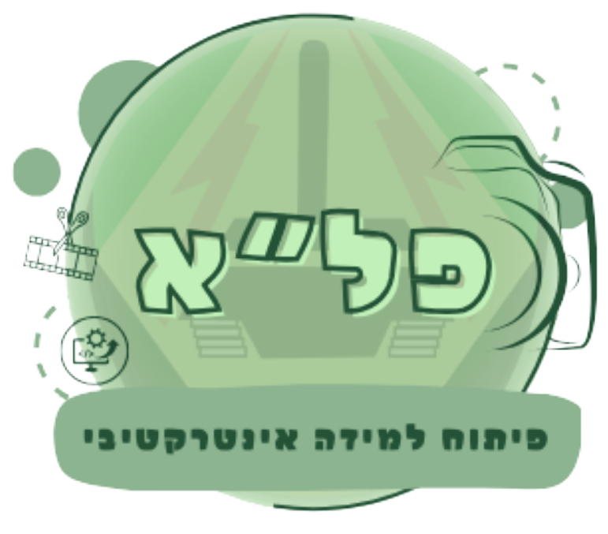
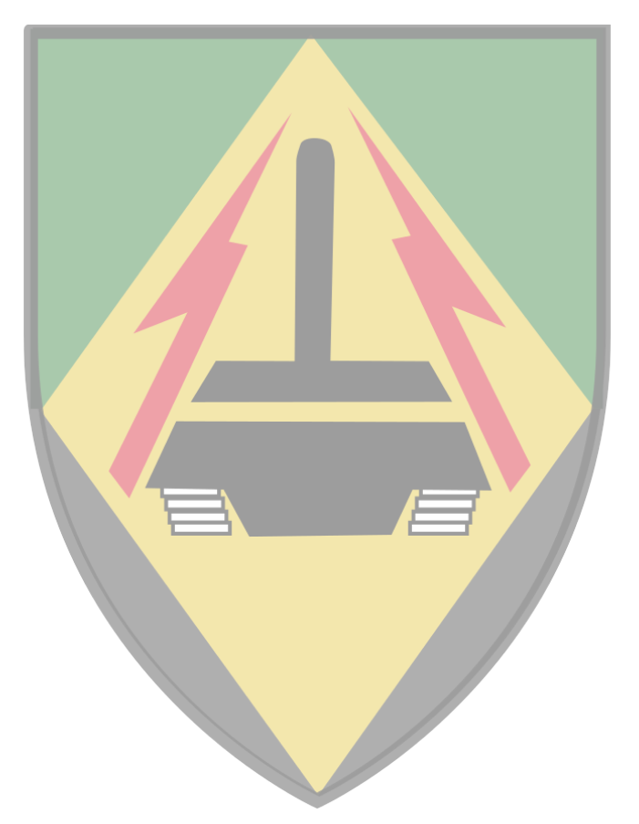
לומדת הרבנות
הקדמה:
ברוך הבא ללומדת הרבנות!
מטרת לומדה זו הינה ליצור שפה משותפת בין סגלי הרבנות ביחידה המתאמנת וחונכי הרבנות במא"ל. נעבור על מושגי יסוד
של מבנה צה"ל, תכנון וביצוע מבצעים, עבודת הרבנות בשוטף וטיפול בחללים.
הלומדה אינה תחליף לחונך והינה בעלת ידע בסיסי בלבד!
.על כן יושלמו כלל התכנים על ידי סימולציות וחניכה צמודה של חונך הרבנות
בהצלחה
דילמות
תפקידה של מחלקת הרבנות מלווה בדילמות רבות שלהן הרב וחייליו יצטרכו לתת מענה.
על רב הגדוד לשמור על יציבות וקור רוח נוכח הדילמות שייתקל בהן ולתת מענה מהיר ומקצועי ככל הניתן.
מעבר לתרגולו המעשי של הרב בנושא טיפול בחללים ישנה חשיבות רבה לתרגל את רב הגדוד בתפקידו כקצין בפלס"ם, ויכולתו
לקבל החלטות בשטח ע"פ שיקול דעתו
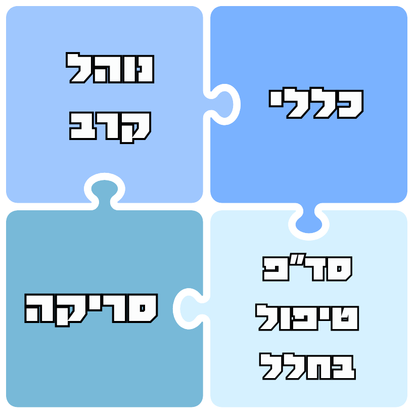
לחץ על הנושא שתרצה להתחיל ללמוד
מחלקת הרבנות בגדוד
בכל גדוד ישנה מחלקת רבנות ת"פ פלוגת סיוע המנהלתי.
המחלקה מורכבת מרב צבאי בדרגת קצונה וארבעה חיילים.
באחריות המחלקה לתת מענה לגדוד בשגרה וחירום בכלל תחומי הרבנות.
ככוח שמופעל רק במילואים, מצופה מאנשי הרבנות במחלקה להיות בקיאים בתו"ל הרבנות בחירום ובכל הנוגע לטיפול
בחללים, בנוסף ליכולתם לתת מענה בשאר תחומי הרבנות.
כאשר מחלקת הרבנות פועלת ככוח מטפל בחללים, היא גם נקראת תא"ח (תחנת איסוף חללים)
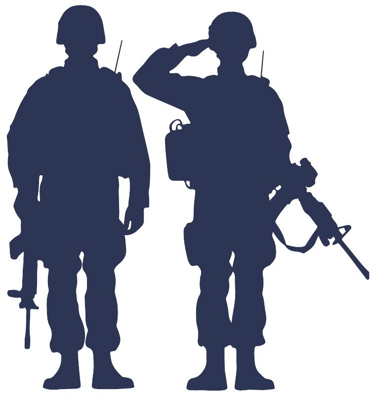
תא"ח
תחנת איסוף חללים הינה "תחנה" המופעלת ע"י מחלקת הרבנות המתעסקת בטיפול בחללים וממצאים
משימות התא"ח:
- קליטת חללים המובאים אליו
- זיהוי חללים מוקדם ככל הניתן ותיעוד כל דבר העשוי לסייע בזיהוי
- פינוי מהיר ככל הניתן מהתחנה. שליטה בתמונת מצב החללים
כל השלבים ייעשו תוך שמירה מירבית על כבוד המת
מיקום מחלקת הרבנות
מיקום מחלקת הרבנות בפלס"ם הינו עם כוחות הרפואה.
בכוחות מנוגמ"שים, המחלקה נמצאת בנגמ"שי 18 עם התאג"ד.
בכוחות קלים, על הרב להגדיר ביחד עם המג"ד/קרפ"ג את מיקומם של מחלקת הרבנות בהתאם לתכנית האופרטיבית והכשרת
סד"כ הרבנות כאשר העדיפות הראשונה היא ביחד עם לבנות הרפואה. לרוב, כוחות הרפואה ביחידות האלה מחולקים בין
הפלוגות הלוחמות בחוליות רפואיות קדמיות (חר"קים)
חלוקת תפקידים בתא"ח
רב הגדוד
מפקד התא"ח
סגן רב
באחריות רב הגדוד לתת מענה לגדוד שלם ולכן מומלץ למנות ס.רב מתוך חיילי הרבנות שיתפקד כדמות פו"שית
כאשר יש צורך לתת מענה לאירועים רבים במקביל
רשם
באחריות הרשם למלא את כל הטפסים הנדרשים במלואם ולתעד את פעילותו של התא"ח. באירועי חללים, באחריותו
להיצמד למתחקר העדים ולתעד את תהליך הזיהוי
נאמן רבנות
במקביל ללוחמים המוכשרים לתת מענה בסיסי לפצועים (ע"י הנחת ח"ע וכדומה) ולחובשים במרחבים
הפלוגתיים, יש למנות נאמני רבנות שיכולים לתת מענה ראשוני לאירועי חללים בכוחות המתמרנים.
תפקידם של נאמני הרבנות הינו ביצוע עיטוף בסיסי והעברת פרטים רלוונטיים לרב הגדוד בנוגע לזהות החלל ונסיבות
האירוע. כל זה על מנת לאפשר את רצף הלחימה, שמירה על כבוד המת וניסיון מירבי לאמת את זהות החלל. באחריות רב
הגדוד לספק ציוד ייעודי לכלל נאמני הרבנות במסגרתו ולבצע רענון לפני יציאה לקרב
שרשרת הפינוי
שרשרת פינוי החללים מתבססת על שרשרת פינוי הפצועים, והיא משתנה בהתאם למתאר ולשלב הלחימה בו נפל
החלל.
ככלל, נעדיף למזער את כמות ההחלפות, אך לפעמים יש צורך בהעברות מתחנה לתחנה, על מנת לאפשר לכלים לחזור
ללחימה בזמן קצר או בהתאם לשרשרת הפינוי.
בנקודת שחלוף אין כוח קבוע, והיא משמשת כמקום חבירה מוסכם לפינוי נפגעים לאחר תיאום בין הכוחות.
יש לציין כי בכל נקודה אליה יגיע החלל עד הגיעו למאנ"ח ישנו מענה רבנותי שידאג להמשך העברתו אחורה באופן
בטוח
ומקצועי
ציוד חללים ותספיקי דת
התא"ח הגדודי מבוסס על שני תיקי תא"ח כאשר כל תיק מכיל ציוד לחמישה חללים. באחריות רב הגדוד
לדאוג שקיימת עתודה של 150% ציוד (כמות מספקת לחמישה עשר חללים נוספים) ברמת הגדוד ולתאם תכנית "מלא מחדש"
מול מפל"ג ההספקה.
בנוסף, על רב הגדוד לדאוג לתספיקי דת שונים (כגון ציציות, תפילין וכו') לכלל החיילים המעוניינים בכך.
באחריותו לוודא שרבנות החטיבה תספק לו ציוד רבנותי זה, וכן שפלגת ההספקה תשנע אותו אליו
כללי
כל משימה מחולקת לשני שלבים:
תכנון וביצוע, או בשפה צבאית, נוהל הקרב וניהול הקרב.
מחלקת הרבנות הינה חלק מכוחות הסיוע המנהלתי, ותפקידה לתמוך במשימתם של הפלס"ם והגדוד. לכן, בנוסף לגיבוש
תכנית הרבנות, נוה"ק הינו הזדמנות לתאם ציפיות עם כלל בעלי תפקידים בפלס"ם ולהבין איך כל אחד יכול לסייע
לשני
שלבי נוה"ק בפלס"ם:
קפ"ק 1 – הורדת פקודה מרמה ממונה
גיבוש תכניות – עבודה על הפקודה הלוגיסטית של הגדוד: כתיבת סעיף ונספח
קפ"ק 2 – העמקת ההיכרות בתכנית של יחידות המשנה
נספח רבנות
הנספח הינו קובץ הוראות מקצועיות של כל תחום בפלס"ם המצורף לפקודה הלוגיסטית, ומפרט באופן מלא
את כל פעילויות התחום במהלך המשימה.
בשלב זה, יש לדקור את מתקני הרבנות הרלוונטיים במשואה ולתכנן את צירי הפינוי עם הרפואה.
נספח הרבנות הגדודי נגזר מנספח הרבנות החטיבתי ויש לתאם ציפיות מול רב החטיבה לפני תחילת עבודה על הנספח
סעיף הרבנות
סעיף הרבנות הינו סעיף קצר, מוזן במשואה, המתאר את תכנית הרבנות באופן רלוונטי למפקד בשטח.
הסעיף הוא בסיס לאישור תכניות של הרבנות בפלס"ם ומחולק לשלושה חלקים:
- מענה לאירועי חללים
- מענה לאירועי סריקה
- דגשים מקצועיים ("רבנות אמת")
כל אירוע חלל דורש מענה תואם תרחיש, ולכן יש לשים דגש על שלבי הלחימה, סיווג אירועים ותכנית
הפעולה הכללית של הפלס"ם
יחסי גומלין
על הרב לדווח ולקבל הנחיות בשני מישורים:
- רמה ממונה מקצועית: רב החטיבה
- רמה ממונה פיקודית: מפקדת הפלס"ם
נוה"ק מהווה הזדמנות טובה גם לתאם ציפיות ותכניות עם שאר בעלי תפקידים בפלס"ם וכך לכתוב סעיף
רבנותי שלם ורלוונטי יותר.
לדוגמא: לפי תו"ל הרבנות, כאשר ישנם חלקים נפרדים, אנו מתייחסים לכל חלק כאל חלל בפני עצמו.
לכן, יש לתאם שפה משותפת עם גורמי המשא"ן כדי לחסוך אי-הבנות ביניהם.
לדוגמא:
שלבי טיפול בחלל
- הכנה עצמית
- קבלת החלל ובניית תמ"צ
- העברת מקל ואישורים
- טיפול ראשוני בחלל
- עדות
- סיום טיפול
- פינוי וסגירת מעגלים
שלב א' - הכנה עצמית
על רב הגדוד להכין את מחלקתו מכל הבחינות לקראת יום פקודה. הכנה זו כוללת הכנה נפשית, הכנת ציוד
והכרת הטפסים. לפני קבלת חלל, מצופה מכל אחד במחלקת הרבנות להכיר את התיק ושיטת המילוי של הטפסים. בנוסף, יש
לחלק משימות ותחומי אחריות לכל אחד ממפעילי התא"ח.
חובה לבצע מסדר ציוד ע"י מפקד התא"ח לפני יציאה ללחימה, ויש לעקוב גם אחר החוסן הנפשי של
מפעילי התא"ח.
חובה
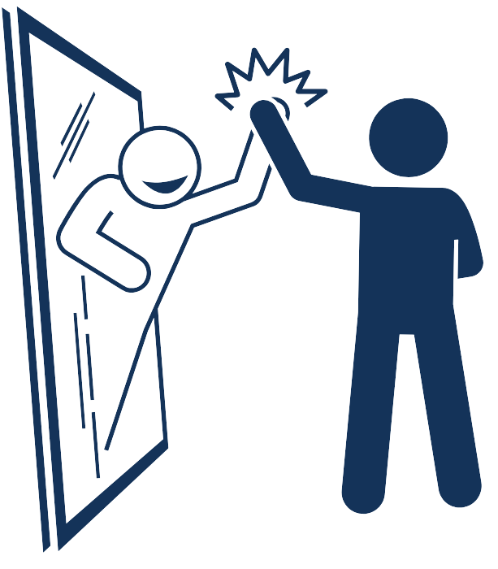
שלב ב’ - קבלת החלל ובניית תמ"צ
עם קבלת החלל, יש לשים כפפות לדאוג לכיסוי והצנעת החלל לצורך שמירה על כבוד המת וכבוד החיים.
לפני תחילת טיפול, יש לעצור ולתכנן את הפעולות הנדרשות ע"י בניית תמונת מצב שנגזרת מתמונת מצב אג"מי, מיקום
כוחות הסיוע המנהלתי ומוכנותם לפינוי.
לאחר מכן, יש להבין איזה בעלי תפקידים נצרכים על מנת לבצע את הטיפול.
לדוגמא: אם החלל מגיע בלי בגדים, אין צורך באישור אי-המצאות תחמושת ואם אין זמן לבצע זיהוי
בהיכרות אישית, אין צורך בעדים שמכירים את החלל.
לאחר גיבוש תכנית הטיפול, יש לחפש את בעלי התפקידים הרלוונטיים (כולל עדים), לתדרך אותם על סדר הפעולות
הנדרשות, לוודא כשירותם המנטלית לביצוע הפעולה ולהמשיך בטיפול. עם תחילת הטיפול, ייפתח טופס 246 .
לדוגמא:
שלב ג’ - טיפול ראשוני בחלל
מטרת שלב זה הינה טיפול מינימלי לפני קבלת עדות. השאיפה היא לשחרר את העדים בהקדם האפשרי ולכן
עדיף לקבל את העדות לפני טיפול מלא.
לאחר גיבוש תכנית הטיפול וקבלת האישורים הנדרשים, יש לכסות את החלל, לשים אצעדה על ידו הימנית ולרשום בטופס
246 את המספר. בנוסף, יש לאסוף את כל החלקים והחפצים של החלל ולשים אותם בשקיות פינוי ואיסוף. במקרה הצורך,
יש לנקות את פני החלל ולהכינו לזיהוי.
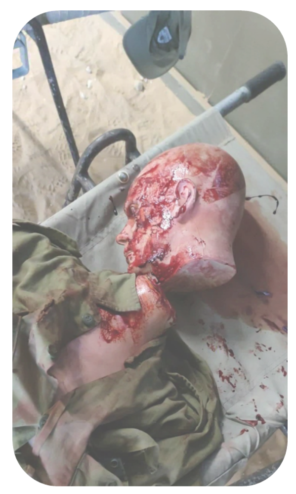
שלב ד' - עדות
כללי:
- זיהוי בהיכרות אישית הינה פעולה בעלת משקל רב וחשיבותה מתבטאת הן בהיבט ההלכתי והן בהיבט המשפטי-אזרחי.
- על צוות התא"ח לנסות לגבות עדות משני אנשים המכירים את החלל, אך גם במידה ויהיה רק מזהה אחד יילקח
הזיהוי בכל זאת.
כל מידע על חלל שלא על בסיס היכרות אישית או זיהוי מדעי (טביעות אצבע, DNA וחלל הפה) נקרא
"זיהוי נסיבתי" .
על אף שאי-אפשר לקבוע את זהות החלל ע"ב זה, כל פריט מידע קטן יכול להשלים פערים בסיפור ולכוון את תהליך
הזיהוי. גם במקרה שיש זיהוי בהכ"א, יש לנסות להביא כמה שיותר מידע מהשטח כדי לחזק את הזיהוי.
שלב ה' - סיום טיפול
לאחר תהליך הזיהוי ותיעוד, יש להשלים את הטיפול ולהכין את החלל לפינוי.
- סיום טופס 246
- הכנסה לשק
- השהייה (במידת הצורך) עם שמירה צמודה
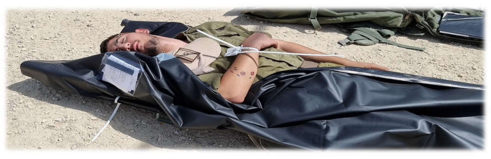
שלב ו' - פינוי וסגירת מעגלים
לפני פינוי החלל, יש למלא טופס 248 (דו"ח העברת חלל) ולהעביר שני עותקים של הטופס לנהג עם
עותקים של טפסי 246 של כל החללים שרשומים ב-248.
בנוסף, יש למלא טופס 249 (יומן תא"ח), לעקוב אחר פערים (עזר 26) ולבצע חזרה לכשירות.
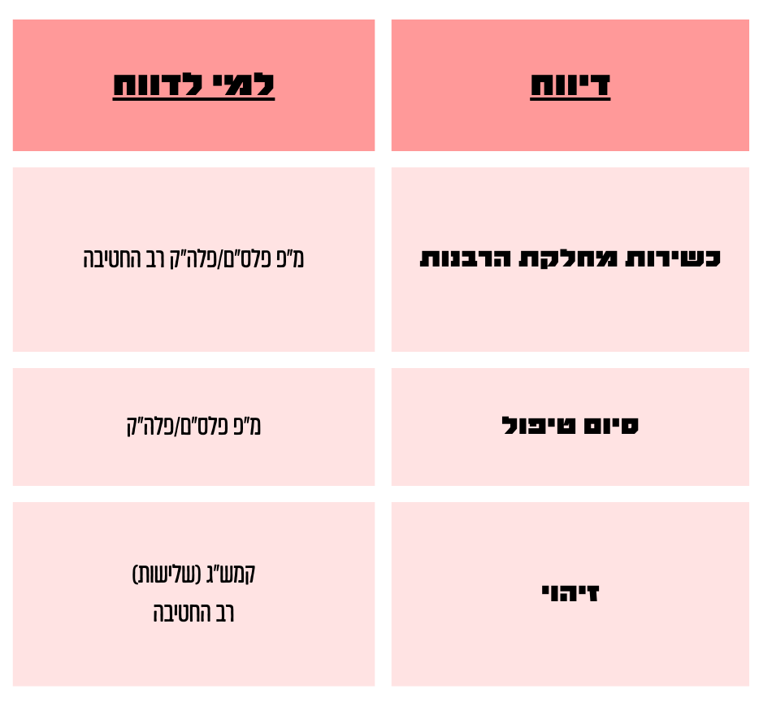
יש לסגור מעגלים בעת פינוי חללים ע"י דיווחים על יציאה וקבלת דיווח שהחלל נקלט בתחנה המתקבלת.
חללי אויב
טיפול בחלל אויב הינו אירוע אג"מי ואין לטפל בחללי אויב בלי אישור של אג"ם הגדוד. לפני טיפול של
הרב, יש לוודא סילוק פצצות ע"י גורם מוסמך (אישור של קצין לוחם לא מספיק) וטיפול ע"י יחפ"ש (יחידה לאיסוף
ולפינוי שלל) ומודיעין. לאחר פעולות אלה ואישור אג"מי, יש לעטוף את החלל באופן בסיסי ולפנות כחלל רגיל.
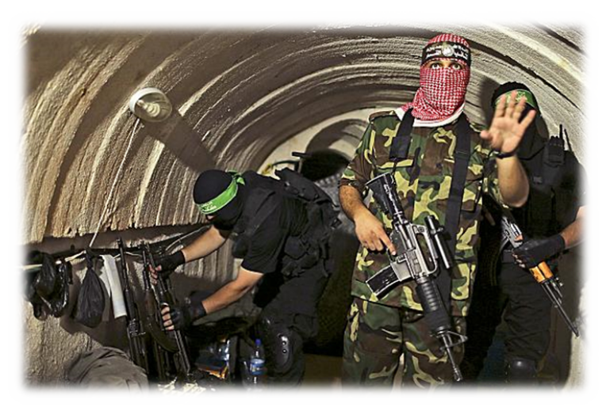
טפסים ברמת הגדוד
טופס 246:
דו"ח על איסוף חלל
תעודת הזהות של החלל שמתעדת את כל תהליך הטיפול והזיהוי.
טופס 248:
דו"ח העברת חללים
"תעודת משלוח" על פינוי חללים.
טופס 249:
יומן תא"ח
תיעוד כלל החללים שעברו בתא"ח.
עזר 26:
כשירות מסגרות רב"ץ
עזר שמיועד לעקוב אחרי כשירות התא"ח בהיבטי ציוד, כוח אדם ועוד.
אירוע סריקה
אירוע סריקה הינו אירוע בו יש פיזור נרחב של חלל אחד ומעלה. יש ליישר קו לגבי הגדרת אירוע סריקה
עם רב החטיבה ומ"פ הפלס"ם בשלב נוה"ק ולתכנן את המענה לאירוע כזה בכלל שלבי הלחימה.
המענה האידיאלי לאירוע מסוג זה ניתן ע"י יחידות סריקה וריכוז (יס"ר) שמורכבות מלוחמים שבקיאים ומנוסים
במקצוע הסריקה ומופעלים ע"י רבנות חטיבה/אוגדה.
במידה ואין אפשרות לבצע סריקה מקצועית כנדרש, באחריות רב הגדוד לתת מענה רבנותי לאירוע ככל שניתן.
סריקה - יס"ר
תפקיד רב הגדוד:
מתפקד ת"פ מפקד היס"ר בטיפול אחראי על תיאום ברמת הגדוד מבצע סריקה ראשונית והעברת מקל לצוות
יס"ר סגירת מעגלים אג"מית ומקצועית
טכניקות בסיסיות לסריקה
סריקה קווית:
שיטת הסריקה "שתי וערב" מיועדת לשטחים פתוחים ומאפשרת כיסוי של גזרה גדולה בפרק זמן קצר יחסית.
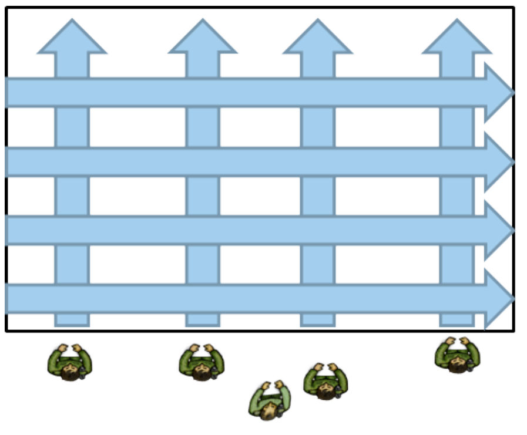
טכניקות בסיסיות לסריקה
סריקה מעגלית
שיטת הסריקה "שבלול" מיועדת לשטחים שיש בהם מוקד מרכזי של פגיעה או פיצוץ.
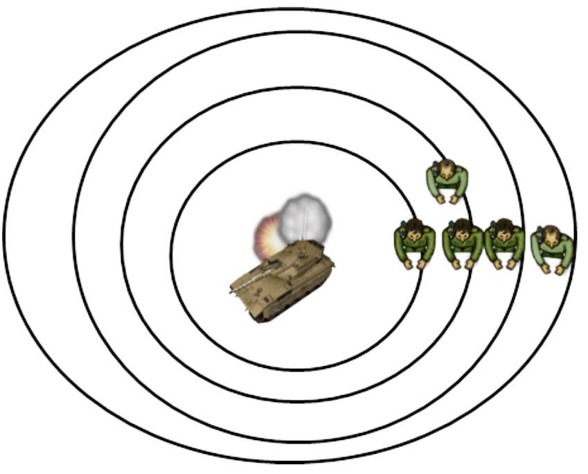
לאחר שלמדתם ותרגלתם, הגיע הזמן למבחן קצר.
המבחן מורכב מX שאלות.
שימו לב כי ברגע שתעברו לשקף הבא, לא תוכלו לחזור אחורה ולכן אם אתם עדיין מרגישים שאתם צריכים לחזור על החומר,
עכשיו זה בדיוק הזמן!
בנוסף, אין באפשרותכם לנווט בין השאלות, ברגע שעברתם שאלה התשובה שסימנתם היא תשובתכם הסופית, אז מומלץ לשקול
טוב לפני שתעברו שאלה.
בעמוד הבא תתבקשו להזין את הפרטים האישיים שלכם על מנת שנוכל לזהות מי עשה את המבחן :)
בסוף המבחן יוצג לכם מסך עם פרטיכם האישיים והציון שלכם. עליכם לצלם מסך ואת צילום המסך יש להעביר לגורם
הרלוונטי.
המשך